N-D Test Functions D¶
N-D Test Functions D¶Damavandi test objective function.
This class defines the Damavandi global optimization problem. This is a multimodal minimization problem defined as follows:
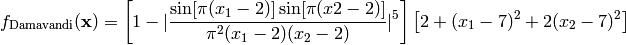
Here,  represents the number of dimensions and 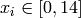 for
represents the number of dimensions and 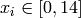 for  .
.
Two-dimensional Damavandi function
Global optimum:  for 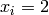 for
for 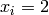 for
Deb 1 test objective function.
This class defines the Deb 1 global optimization problem. This is a multimodal minimization problem defined as follows:
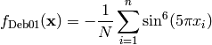
Here, represents the number of dimensions and ![x_i \in [-1, 1]](_images/math/69d20098894c45659a72bd07f85a904ff6726b1e.png) for .
for .

Two-dimensional Deb 1 function
Global optimum: . The number of global minima is 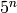 that are evenly spaced
in the function landscape, where represents the dimension of the problem.
Deb 2 test objective function.
This class defines the Deb 2 global optimization problem. This is a multimodal minimization problem defined as follows:
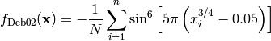
Here, represents the number of dimensions and ![x_i \in [0, 1]](_images/math/e365bfdf2ca5275ec86c322fa2fe576a37b0efd7.png) for .
for .

Two-dimensional Deb 2 function
Global optimum: . The number of global minima is that are evenly spaced
in the function landscape, where represents the dimension of the problem.
Decanomial test objective function.
This class defines the Decanomial function global optimization problem. This is a multimodal minimization problem defined as follows:
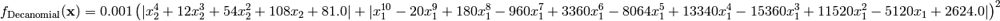
Here, represents the number of dimensions and ![x_i \in [-10, 10]](_images/math/d511ca3206c16bae3e3af3c02835f3fe9fb07286.png) for
for  .
.
Two-dimensional Decanomial function
Global optimum:  for
for ![\mathbf{x} = [2, -3]](_images/math/1927bebccf4c73e04b4474d988813aba0c4c9aa9.png)
Deceptive test objective function.
This class defines the Deceptive global optimization problem. This is a multimodal minimization problem defined as follows:
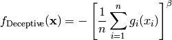
Where  is a fixed non-linearity factor; in this exercise, 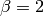. The function
is a fixed non-linearity factor; in this exercise, 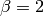. The function  is given by:
is given by:
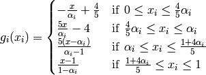
Here, represents the number of dimensions and for .
Two-dimensional Deceptive function
Global optimum:  for 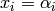 for
for 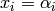 for
Deckkers-Aarts test objective function.
This class defines the Deckkers-Aarts global optimization problem. This is a multimodal minimization problem defined as follows:
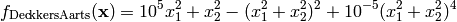
Here, represents the number of dimensions and ![x_i \in [-20, 20]](_images/math/026a917a812dbaef4e7a8ea87e9963bb111e2644.png) for .
for .

Two-dimensional Deckkers-Aarts function
Global optimum: 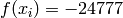 for 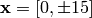
DeflectedCorrugatedSpring test objective function.
This class defines the Deflected Corrugated Spring function global optimization problem. This is a multimodal minimization problem defined as follows:
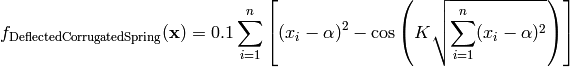
Where, in this exercise, 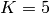 and 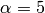.
Here, represents the number of dimensions and 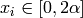 for .
Two-dimensional Deflected Corrugated Spring function
Global optimum: for 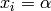 for
DeVilliers-Glasser 1 test objective function.
This class defines the DeVilliers-Glasser 1 function global optimization problem. This is a multimodal minimization problem defined as follows:
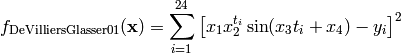
Where, in this exercise, 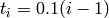 and 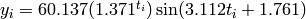.
Here, represents the number of dimensions and 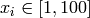 for .
Global optimum: for  for 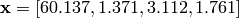.
for 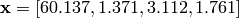.
DeVilliers-Glasser 2 test objective function.
This class defines the DeVilliers-Glasser 2 function global optimization problem. This is a multimodal minimization problem defined as follows:
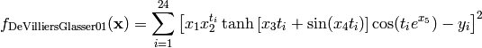
Where, in this exercise, and 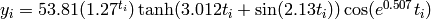.
Here, represents the number of dimensions and 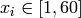 for .
Global optimum: for for 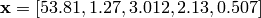.
Dixon and Price test objective function.
This class defines the Dixon and Price global optimization problem. This is a multimodal minimization problem defined as follows:
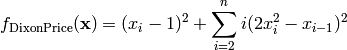
Here, represents the number of dimensions and for .

Two-dimensional Dixon and Price function
Global optimum: for 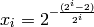 for
Dolan test objective function.
This class defines the Dolan global optimization problem. This is a multimodal minimization problem defined as follows:
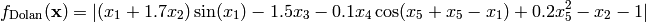
Here, represents the number of dimensions and ![x_i \in [-100, 100]](_images/math/33bdb423b6ec61d9668e76b556c95c96b2bb72ef.png) for .
for .
Global optimum: 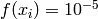 for 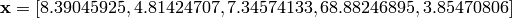
DropWave test objective function.
This class defines the DropWave global optimization problem. This is a multimodal minimization problem defined as follows:
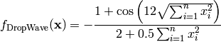
Here, represents the number of dimensions and ![x_i \in [-5.12, 5.12]](_images/math/670fd074f4bb495bf2a1d327d769de738121e329.png) for .
for .
Two-dimensional DropWave function
Global optimum: for for